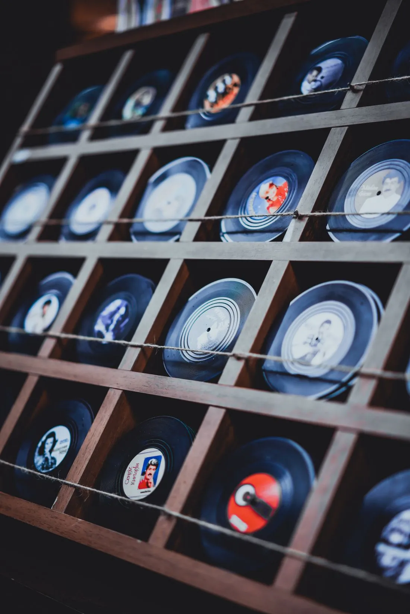

After the algorithm, a new kind of playlist
A wave of human curators is returning to radio, newsletters and shared mixtapes.
Streaming gave us everything, and quietly took something away. A look at what we lost in the shuffle.

There is a shelf in my flat that holds two hundred records. I rarely play them. Most evenings I ask a speaker to play something, and it does, instantly and without ceremony. It is a miracle. It is also strangely empty.
For decades music was an object: heavy, scratched, loaned to friends and never returned. Today it is a permission, and permissions can be withdrawn. Albums vanish from services overnight, and nothing we have paid for belongs to us.
We have access to every song ever recorded and almost nothing we truly keep.
Perhaps that is why vinyl, cassettes and even CDs are creeping back. Younger listeners buy records they cannot afford to play, simply to hold the thing they love. It is less about sound than about ownership.
The industry calls it a niche. Independent shops call it a lifeline. Either way, it suggests we want a relationship with music, not only a subscription.
A wave of human curators is returning to radio, newsletters and shared mixtapes.
Along England’s south coast, volunteers are replanting meadows that locked away carbon for centuries.